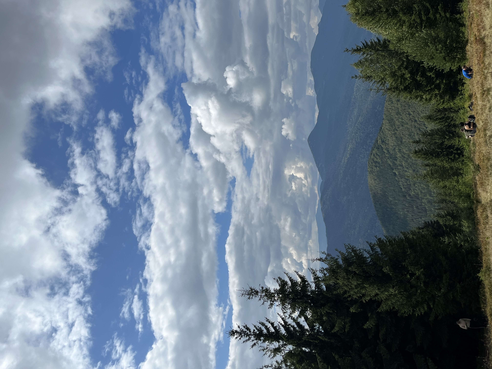
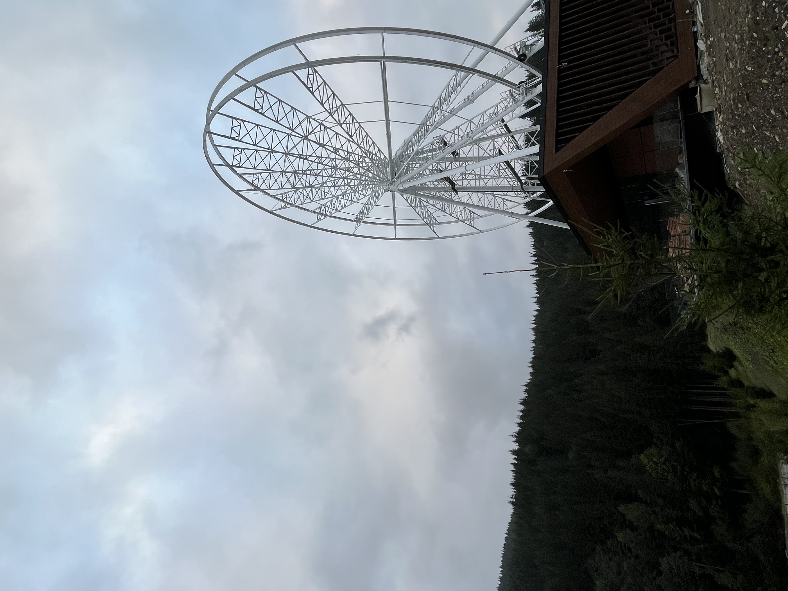
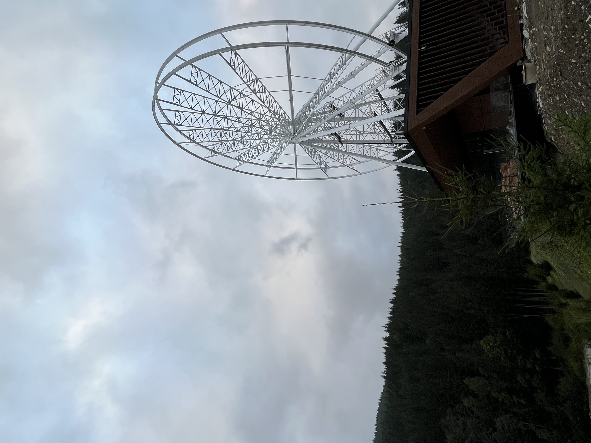
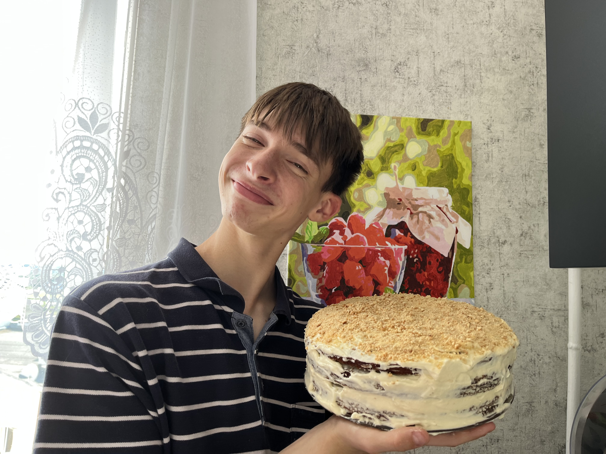

Музика
Я дуже люблю слухати музику. Для мене музика - це заспокійливе. Це один з способів втекти від світу, поблукати по своїх думках, очистити розум. Взагалія меломан, але всеодно мене є виконавці яких я дуже люблю наприклад:
Також я ходжу на гурток зі співів у своєму містечку і мені дуже подобається. Я разом з нашим колетивом об'їздили дуже багато міст в Україні та були учасниками дистанційних міжнародних конкурсів
Фотогрії
Так як я люблю подорожувати, так само я і люблю робити гарні фотографії в подорожах

 

(Як ви зрозуміли я дуже люблю фотографувати гори)
Спорт
Я регулярно відвідую спрот зал і займаюся з тренером. Це все роблю для того щоб вдосконалити своє тіло, але спорт це не лише тіло, а й здоров'я. Спорт робить людину організованішою та відповідальнішою, що є дуже добре та важливо для мене.
Кулінарія
Я дуже різнобічна людина тому і маю багато хобі. І ось ще одне моє хобі це кулінарія. За все життя я не багато, що приготував, але кожного разу як я готую, дуже насолоджуюся процесом.
це мій тортик "Медовик".